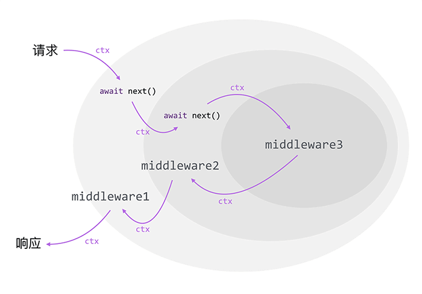
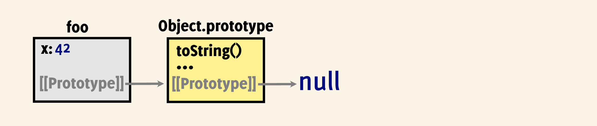
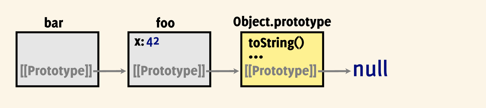
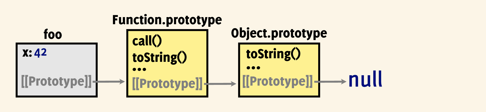
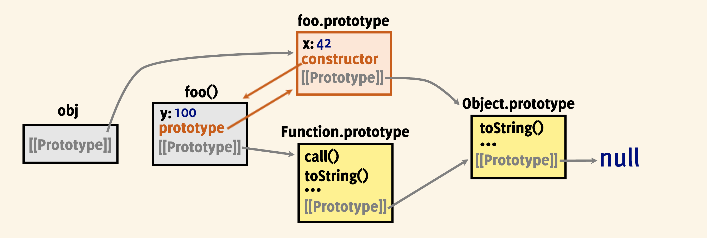
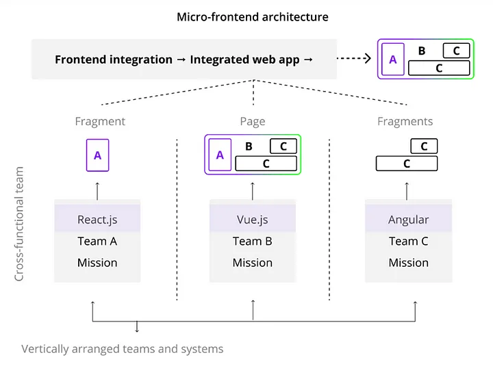
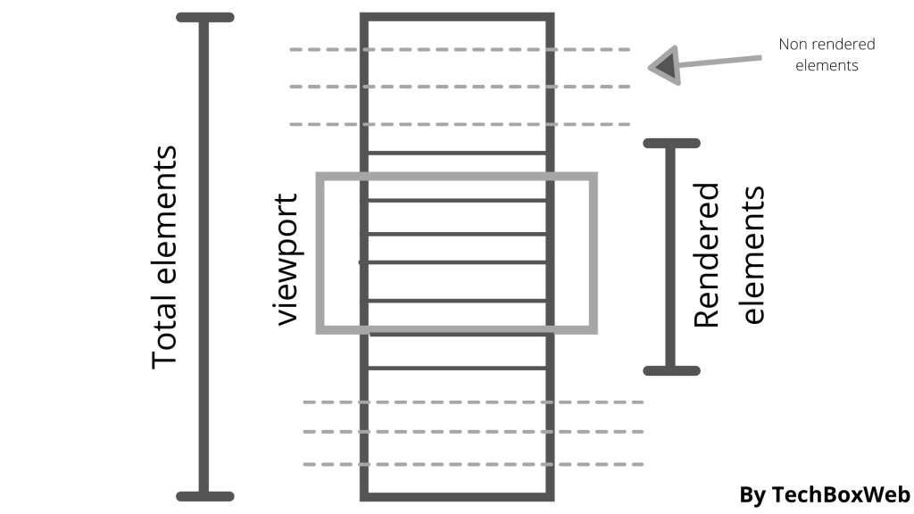
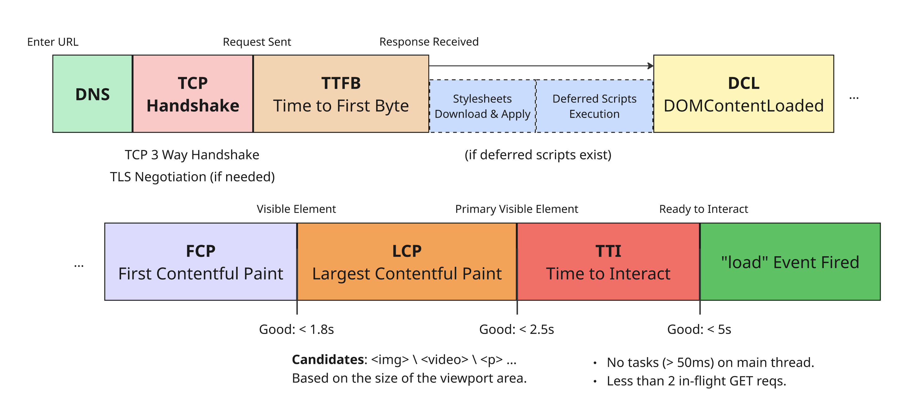
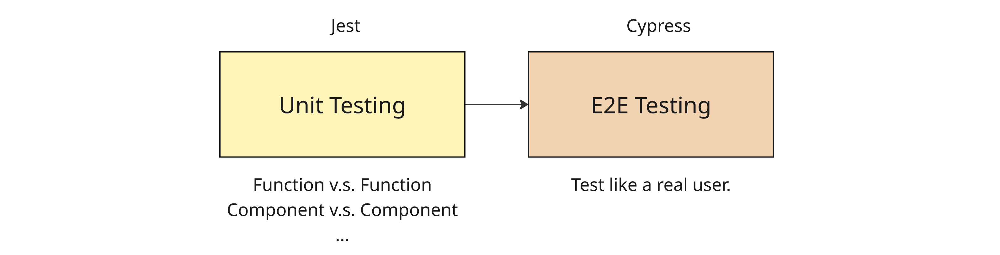
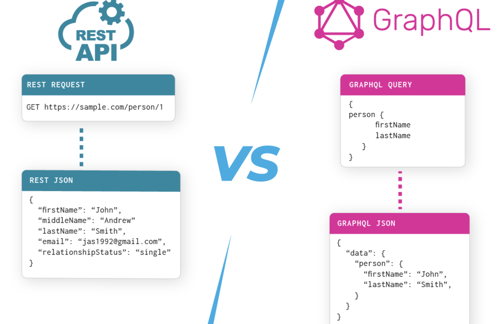

前端面试模版
CSS
响应式设计（Responsive Web Design，RWD）
媒体查询（Media Query）
- 先为窄屏设备创建简单的单列布局，然后再检查是否适用于更宽的屏幕，并在确定屏幕宽度足够处理时实现多列布局。优先考虑移动设备的设计被称为移动优先设计。
@media screen and (min-width: 80rem) { /* 断点，使用相对单位 */
.container {
margin: 1em 2em;
}
}
弹性盒子（FlexBox）
- 通过更改 flex-grow 和 flex-shrink 控制元素在空间过大、过小时的表现形式；
@media screen and (min-width: 600px) { /* 配合媒体查询 */
.wrapper {
display: flex;
}
.col1 {
flex: 1;
margin-right: 5%;
}
.col2 {
flex: 2;
}
}
CSS Grid
@media screen and (min-width: 600px) {
.wrapper {
display: grid;
grid-template-columns: 1fr 2fr; /* 动态列宽度，比例 1:2 */
column-gap: 5%;
}
}
响应式图形、媒体
- 使用支持响应式图像的 <img> 标签（利用 srcset 和 sizes 属性），可以让浏览器根据设备的屏幕分辨率或视口宽度，自动选择最合适的图片资源，实现更快加载、清晰显示和节省带宽。
img,
picture,
video {
max-width: 100%; /* 确保媒体永远不会大于其响应容器 */
}
响应式排版
- 基于媒体查询：
html {
font-size: 1em;
}
h1 {
font-size: 2rem;
}
@media (min-width: 1200px) {
h1 {
font-size: 4rem;
}
}
- 基于视口单位：
h1 {
font-size: calc(1.5rem + 4vw); /* 1vw 等于视口宽度的百分之一 */
}
视口元标记
<!-- 将视口的宽度设置为设备宽度，并将文档缩放到其预期大小的 100% -->
<meta name="viewport" content="width=device-width,initial-scale=1" />
Tailwind CSS
- Tailwind 提供了原子化的「实用类」，一个类对应一个样式，通过组合可以灵活实现各种样式。
- 代码即样式，可读性高；
- Tailwind 配置中定义了统一的颜色、间距、字体等设计系统；
- 内置响应式断点类，写法简洁：
<div class="text-sm md:text-lg lg:text-xl">Responsive Text</div>
CSS Module
- 目的：为每个 CSS 类名生成一个作用于当前模块的唯一标识符，从而实现“样式隔离”；
- 工作流程：
- 编写 *.module.css 文件；
- 构建工具读取该文件，为每个类名生成一个全局唯一类名。类名中的 hash 部分通常基于 CSS 模块文件路径、类名，甚至文件内容生成，可以保证最终类名的唯一性；
- 生成「原始类名 -> 唯一类名」的映射对象（JS）；
- 在组件中通过原始类名嵌入唯一类名；
- React 根据唯一类名找到 CSS 样式。
CSS 预处理器（SCSS、Less）
- 目的：让 CSS 更像“程序语言”一样强大、可复用、结构清晰；
其他
洋葱模型（Onion Model）

function compose(middlewares) {
return middlewares.reduce((prev, cur) => {
return next => prev(() => cur(next))
})
}
BEM（Block, Element, Modifier）
- 一种 CSS 命名规范，为了写出可读性强、结构清晰、易维护的 CSS 类名；
<div class="card card--featured">
<h2 class="card__title">Article Title</h2>
<p class="card__content">Some content here...</p>
</div>
/**
.block {} // 块；
.block__element {} // 元素（block 的子部分）；
.block--modifier {} // 修饰符（block 的一种状态）；
.block__element--modifier // 元素的状态。
*/
.card {
border: 1px solid #ddd;
}
.card--featured {
border-color: gold;
}
.card__title {
font-size: 20px;
}
.card__content {
color: #666;
}
JavaScript
原型链
原型链
let foo = { x: 42 }
Object.getPrototypeOf(foo) === Object.prototype // true
Object.getPrototypeOf(Object.prototype) === null // true
foo.hasOwnProperty('x') // true
foo.hasOwnProperty('toString') // false
- 对象通过内部槽 [[Prototype]] 指向其构造函数的 prototype 对象；
显式指定原型链
显式指定原型链
let bar = Object.create(foo) // 将 foo 作为 bar 的隐式原型；
foo.isPrototypeOf(bar) // true
Object.prototype.isPrototypeOf(bar) // true
// let bar = {}
// Object.setPrototypeOf(bar, foo)
- 通过
Object.create可以显式修改对象的隐式原型链；
函数对象的原型链
函数对象的原型链
function foo() {}
- JS 函数是“头等对象（First-class Objects）”，意味着它们具有类似普通对象一样的特征：
- 可作为参数传递；
- 原型链继承自 Object.prototype。
属性的“遮盖”
let foo = {}
Object.defineProperty(foo, 'x', { writable: false, value: 40 }) // 只读属性；
let bar = Object.create(foo)
bar.x = 100 // 不会遮盖位于 foo 上的同名属性；
console.log(bar.x) // 40
- 位于最近原型链上的属性会“遮盖（Shadowing）”位于上层原型链的同名属性。
- 位于原型链上的只读属性无法被“遮盖”；
setter 的“遮盖”
const foo = {
set myProp(v) {
this.x = v + 1
}
}
const bar = Object.create(foo)
bar.myProp = 10 // setter 被调用；
bar.x === 11 // true
- 位于原型链上的 setter 不会被遮盖，反而会被调用；
prototype 与 constructor 属性
函数对象的原型链
function foo() {}
foo.prototype.constructor === foo // true
foo.prototype.x = 42
foo.y = 100
Object.getPrototypeOf(foo) === Function.prototype // true
let obj = new foo()
obj.x // 42
obj.constructor === foo // true
foo.prototype.isPrototypeOf(obj) // true
- constructor 属性不参与新对象的创建过程，只用来反向查找某个对象的构造函数是什么；
- 函数对象的 prototype 属性用于放置，需要以该函数对象作为构造函数创建出的对象继承的属性；
- [[prototype]]：真实的原型链，查找属性时的遍历路径；
- prototype 属性：可能的原型链，当生成新对象时可能会继承。
- 在构造函数的函数体执行前，JS 引擎就会将 this 指向新创建的对象。而当构造函数执行后，this 被隐式返回；
new 运算符
let obj = new foo() // 使用 new 创建新对象；
let obj = Object.create(foo.prototype) // 设置原型链继承，返回空对象；
foo.call(obj) // 执行 foo 构造函数，this 指向 obj；
return obj
函数作为成员方法调用
function foo() { this.x *= 2 }
let obj = { x: 10, bar: foo }
obj.bar() // foo 中的 this 指向 obj；
obj.x === 20 // true
深拷贝
function deepClone(obj) {
if (obj === null || typeof obj !== 'object') return obj
const clone = Array.isArray(obj) ? [] : {}
for (const key in obj) {
if (obj.hasOwnProperty(key)) // 注意 for..in 会迭代自身和原型链上的可枚举属性；
clone[key] = deepClone(obj[key])
}
return clone
}
值深比较（基础版）
function areDeeplyEqual(o1, o2) {
if (o1 === o2) return true
if (o1 === null || o2 === null) return false
if (typeof(o1) !== 'object' || typeof(o2) !== 'object') return false
if (Array.isArray(o1) !== Array.isArray(o2)) return false
const key1 = Object.keys(o1)
const key2 = Object.keys(o2)
if (key1.length !== key2.length) return false
for (const key of key1) {
if (!o2.hasOwnProperty(key)) return false
if (!areDeeplyEqual(o1[key], o2[key])) return false
}
return true
}
instanceof 增强型实现
function checkIfInstanceOf(obj, classFunction) {
if (obj === undefined || obj === null) return false
if (classFunction === undefined || classFunction === null) return false
while (true) {
const proto = obj.__proto__
if (proto === null) return false
if (proto === classFunction.prototype) return true
obj = obj.__proto__
}
}
- *.prototype.__proto__ 通常等于 Object.prototype，因为 prototype 本身就是一个普通对象，类似于通过
new Object()产生的对象； - Object 是一个函数，所以 Object.__proto__ 等于 Function.prototype。Function 也类似。
简单 Promise 实现
// 使用方；
new MyPromise((resolve) => {
setTimeout(() => {
resolve('First resolved!')
}, 1000)
}).then((value) => {
console.log(value)
return 'Second resolved!'
}).then((value) => {
console.log(value)
return new MyPromise((resolve) => {
setTimeout(() => {
resolve('Third resolved!')
}, 1000)
})
}).then((value) => {
console.log(value)
})
// 实现方 - 仅处理了 fulfilled 状态；
// 1. rejected 状态的处理；
// 2. then 回调函数应该按照微任务执行（queueMicrotask）;
// 3. 错误处理逻辑。
class MyPromise {
#value = null
#state = 'pending'
#callbacks = []
constructor(executor) {
const resolve = (value) => {
if (this.#state != 'pending') return
this.#value = value
this.#state = 'fulfilled'
this.#callbacks.forEach(cb => cb(value)) // 异步 resolve 时被调用；
}
executor(resolve)
}
then(cb) {
return new MyPromise((resolve) => {
const handleFulfilled = () => {
const result = cb(this.#value)
if (result instanceof MyPromise) {
result.then(resolve)
} else {
resolve(result)
}
}
if (this.#state === 'fulfilled') {
handleFulfilled() // 同步 resolve 时被调用；
} else {
this.#callbacks.push(handleFulfilled)
}
})
}
}
Reactive 响应式基本实现
当数据变化时，系统能自动追踪依赖并更新相关视图或逻辑，无需手动管理更新。基本原理：通过 Proxy 自动追踪依赖、触发更新。
let activeEffect = null
function effect(fn) { // 添加依赖入口；
activeEffect = fn
fn()
activeEffect = null
}
// target (响应式对象) → Map (属性名 → Set(effect 函数))；
// 保持对响应式对象的弱引用，不影响 GC；
const targetMap = new WeakMap()
function track(target, key) { // 收集依赖；
if (!activeEffect) return
let depsMap = targetMap.get(target)
if (!depsMap) {
depsMap = new Map()
targetMap.set(target, depsMap)
}
let deps = depsMap.get(key)
if (!deps) {
deps = new Set()
depsMap.set(key, deps)
}
deps.add(activeEffect)
}
function trigger(target, key) { // 找到对应的 effects，全部重新调用；
const depsMap = targetMap.get(target)
if (depsMap) {
const deps = depsMap.get(key)
if (deps) {
for (const effect of deps) {
effect()
}
}
}
}
function reactive(target) {
return new Proxy(target, {
get(obj, key) {
track(obj, key) // 当触发某个 effect 时，开始收集依赖；
return obj[key]
},
set(obj, key, value) {
obj[key] = value
trigger(obj, key)
return true
}
})
}
const state = reactive({ count: 0 })
effect(() => {
console.log(state.count)
})
++state.count
++state.count
斐波那契生成器
// 调用后返回一个迭代器，可以用 for...of 遍历；
function *fibGenerator() {
const dp = Array.from({ length: 50 }, (_, idx) => idx)
dp[0] = 0
yield dp[0]
dp[1] = 1
yield dp[1]
for (let i = 2; i < dp.length; ++i) {
dp[i] = dp[i - 1] + dp[i - 2]
yield dp[i]
}
}
可取消函数（2650. 设计可取消函数）
function cancellable(generator) {
let shouldCancel = false
let cancel = () => {
shouldCancel = true
}
// AbortController 取消 Promise 的本质是 Promise 在内部监听了 signal 的 abort 事件，-
// 然后借此通过 reject 取消 Promise。无法从外部直接取消任何 Promise；
const promise = new Promise((resolve, reject) => {
const driver = (input = undefined, isThrow = false) => {
let p
try {
// generator.next 传入一个值作为上一个 yield 的结果，并返回下一个 yield / return 的值（通过 done 字段区分）；
// generator.throw 传入一个值作为 catch 原因，并返回下一个 yield 的值；
p = isThrow ? generator.throw(input) : generator.next(input)
} catch(e) {
reject(e)
}
if (p.done) {
resolve(p.value)
return
}
p.value.then((v) => {
if (shouldCancel) {
driver('Cancelled', true)
} else {
driver(v, false) // 继续处理下一个 Promise / return；
}
}).catch(e => {
if (shouldCancel) {
driver('Cancelled', true)
} else {
driver(e, true) // 返回错误，并继续处理下一个 Promise / return；
}
})
}
driver(undefined, false)
})
return [
cancel,
promise,
]
};
React
Next.js（App Router）
- Next.js 使用基于文件系统的路由，意味着文件的组织结构直接映射了可用路由（路由位置上的 page.tsx 必须存在）；
- 默认情况下，Layout 和 Page 是 React 服务器组件，对应两种 SSR 方式：
- 静态渲染（Static Rendering）：在编译或缓存重验证时进行。结果会被缓存；
- 动态渲染（Dynamic Rendering）：在收到请求时进行，结果不会缓存。
- Next.js 的 <Link> 组件会在用户进入路由所在视口时，自动预取路由对应页面的内容；
- 当提供 loading.tsx 时，Next.js 会启动流式渲染（Streaming SSR），即先渲染占位 Loading，再异步渲染主体部分；
- Next.js SSR 基本流程：
- 服务器组件在后端被渲染为静态 HTML + RSC Payload（描述组件信息）；
- 浏览器收到 HTML 优先显示骨架；
- 浏览器下载 JS（包含客户端组件），并使用 RSC Payload 将服务器组件渲染整合入客户端组件；
- 最后，JS 水合客户端组件，将事件绑定和状态注入，让它们变得可交互。
- Server Action 将服务端逻辑直接嵌入组件，可用于表单提交、数据操作等，不再需要手动创建 API 路由和使用 fetch。它是比 HTTP 请求更上层的一种抽象，隐藏了底层网络细节，让你像调用本地函数一样调用服务端逻辑。所以不适合基于 HTTP 上层其他应用协议的数据交互形式；
HTTP
Node.js
其他前端相关
Module Federation
微前端架构
Module Federation 是 Webpack5（其他构建工具也提供类似支持）引入的一种模块共享机制，允许多个独立构建的应用在运行时动态加载和共享代码。适用于微前端架构，多个不同团队采用不同技术栈，最后在应用层通过 MF 进行功能整合。
Redux 核心原理与实现
统一状态对象树（state），关注者设置订阅，发布者通过分发（dispatch）action 进行状态变更，dispatch 通过 action.type 找到对应 reducer，结合 action.data 完成状态变更并返回新的全局状态树，最后依次通知所有订阅者状态发生变化。
- 单一状态树：应用的所有状态保存在一个对象树中，方便管理和调试；
- 状态只读：状态只能通过 dispatch(action) 更新，不能直接修改；
- 纯函数更新：reducer 是一个纯函数，确保状态更新逻辑可预测。
function createStore(reducer) {
let state // 保存单一状态树；
let listeners = [] // 保存订阅者；
function getState() { return state } // 获取当前状态；
// 派发 Action；
function dispatch(action) { // { type, data, }
state = reducer(state, action) // 根据 reducer 更新状态；
listeners.forEach((listener) => listener(state)) // 通知所有订阅者；
}
function subscribe(listener) {
listeners.push(listener) // 添加订阅者；
return () => {
// 返回取消订阅函数；
listeners = listeners.filter((l) => l !== listener)
};
}
return { getState, dispatch, subscribe }
}
// Reducer 示例；
function counterReducer(state = { count: 0 }, action) {
switch (action.type) {
case 'INCREMENT':
return { count: state.count + (action.data || 1) }
case 'DECREMENT':
return { count: state.count - (action.data || 1) }
default:
return state
}
}
const store = createStore(counterReducer) // 使用 Store；
const unsubscribe = store.subscribe((state) => { // 订阅状态变化；
console.log('State changed:', state)
});
// 派发 Action；
store.dispatch({ type: 'INCREMENT' }) // 输出: State changed: { count: 1 }
store.dispatch({ type: 'INCREMENT' }) // 输出: State changed: { count: 2 }
store.dispatch({ type: 'DECREMENT' }) // 输出: State changed: { count: 1 }
unsubscribe() // 取消订阅；
store.dispatch({ type: 'INCREMENT' }) // 不会输出订阅信息；
Throttle & Debounce
- Throttle（节流）：限制函数在指定时间间隔内只能执行一次。适合高频触发场景，控制触发次数，比如：限制重试按钮的实际触发频率；
function throttle(fn, delay = 1000) { // 毫秒；
let lastTime = 0
return function(...args) {
const now = Date.now()
if (now - lastTime >= delay) {
if (typeof fn === 'function') fn.apply(this, args)
lastTime = now
}
}
}
- Debounce（去抖动）：延迟函数执行，只有在指定时间内没有再次触发时才会执行。适合用户输入或操作停止后处理，比如：搜索框输入、自动保存、滚动事件。
function debounce(fn, delay = 1000) {
let timer
return function(...args) {
clearTimeout(timer)
timer = setTimeout(() => { // 事件触发后至少等待特定时间再执行；
fn.apply(this, args)
}, delay)
}
}
Virtual List 虚拟列表
虚拟列表基本原理
import React, { useRef, useState, useEffect, useCallback } from 'react';
const itemHeight = 30; // 每个列表项高度；
const visibleCount = 10; // 可视区域最多显示多少个项；
const buffer = 2; // 上下额外渲染几项做缓冲，避免滚动闪烁；
export const VirtualList = (props) => {
const { items = Array.from({ length: 100 }, (_, i) => `Item ${i}`) } = props
const containerRef = useRef(null)
const [scrollTop, setScrollTop] = useState(0)
// 核心逻辑；
const startIdx = Math.max(0, Math.floor(scrollTop / itemHeight) - buffer)
const endIdx = Math.min(items.length, startIdx + visibleCount + 2 * buffer)
const visibleItems = items.slice(startIdx, endIdx)
useEffect(() => {
const ref = containerRef.current
let ticking = false
const onScroll = () => {
if (!ticking) {
window.requestAnimationFrame(() => {
setScrollTop(ref.scrollTop) // 获得相对于父容器的滚动距离，决定现在屏幕顶端是第几个 item；
ticking = false
})
ticking = true
}
}
if (ref) ref.addEventListener('scroll', onScroll)
return () => {
ref.removeEventListener('scroll', onScroll)
}
}, [])
return (
<div
ref={containerRef}
style={{
height: visibleCount * itemHeight,
width: '100px',
overflowY: 'auto',
border: '1px solid #ccc',
position: 'relative',
}}
>
{/* 渲染滚动条 */}
<div style={{
height: items?.length * itemHeight,
position: 'relative',
}}>
{/* 渲染列表项 */}
{
visibleItems.map((item, index) => {
const realIdx = startIdx + index
return (
<div
key={realIdx}
style={{
position: 'absolute',
height: itemHeight,
willChange: 'transform',
transform: `translateY(${realIdx * itemHeight}px)`,
}}
>
{item}
</div>
)
})
}
</div>
</div>
)
}
Webpack 打包基本原理
- 读取配置；
- 构建依赖图：从 entry 入口文件出发，递归地分析模块依赖关系，构建一个模块依赖图。
- 解析每个模块（包括 import、require、动态导入）；
- 通过 AST（抽象语法树）分析依赖；
- 递归分析子依赖模块；
- 形成一张模块图（有向图），节点是模块，边是依赖关系。
- 模块转换：通过相应的 Loader 转换 JS 能识别的模块；
- 模块打包：
- 动态导入（import()）会被打包为分离的 chunk，形成代码分割（code splitting）；
- 最终输出静态资源文件（Bundle）。
- 插件机制：插件钩子机制，支持在生命周期的不同阶段插入自定义逻辑。
- 输出：将构建好的文件输出到 output.path 指定目录，完成打包过程。
前端模块化
CommonJS、AMD 和 ES Modules 是 JavaScript 中的三种模块化规范。
| 特性 | CommonJS | AMD | ES Modules |
|---|---|---|---|
| 加载方式 | 同步 | 异步 | 异步 |
| 使用环境 | Node.js | 浏览器 | 浏览器 + Node |
| 支持静态分析 | ❌ | ❌ | ✅（基于严格的语法和语义限制） |
| 是否原生 | Node.js 原生 | 需库支持 | 现代浏览器原生 |
| 语法 | require() | define() 定义模块、require() 加载模块 | import/export |
- UMD 是一种“模块适配层”，不是语法规范。它是为“发布通用 JS 库”而生的模块包装格式，核心目标是让代码“在任何环境中都能跑”。
(function (root, factory) {
if (typeof define === 'function' && define.amd) {
// AMD；
define([], factory);
} else if (typeof module === 'object' && module.exports) {
// CommonJS；
module.exports = factory();
} else {
// 浏览器全局变量；
root.MyLibrary = factory();
}
}(typeof self !== 'undefined' ? self : this, function () {
// 模块实现代码；
return {
hello: function () {
console.log('Hello from UMD!');
}
};
}));
Service Worker + PWA
Service Worker 是一种在后台运行（独立于网页）的特殊 JavaScript 工作线程，它的基本能力：
- 缓存响应：拦截请求并返回缓存的资源（例如 HTML、CSS、JavaScript 文件）；
- 修改请求或响应：动态生成或替换请求的响应内容；
- 控制网络流量：决定某些请求是否发送到服务器，或者完全阻止某些请求；
- 离线支持：如果网络不可用，则直接从本地缓存中获取资源，无需发起网络请求。
PWA（Progressive Web App）基于 SW 构建，它的核心目标是让网页拥有类似原生应用的流畅体验，同时无需安装。
性能优化
前端常用性能指标
代码分割（Bundle Splitting）
Bundle Splitting 关键在于代码切分点的合理选取，以及对应的懒加载机制。
- 提升首屏加载速度：只加载首屏需要的代码，其他代码按需加载（lazy-loading）；
- 更高的缓存命中率：未变化的子包请求可以利用缓存（更细的代码粒度，更好地缓存）；
其他常用优化手段
- 资源优化：
- 代码、图片等资源压缩；
- Tree Shaking 分析 ES Module 的静态依赖关系，移除无用代码。要注意的是，默认情况下，Webpack 认为所有模块都具有副作用，因此哪怕在当前文件中没有使用 import 文件导出的任何内容，该 import 也不会被移除。
- 加载优化：
- 提前加载关键资源或预测用户行为：
- preload：当前页面即将使用的资源（优先级高）；
- prefetch：未来可能使用的资源（低优先级）；
- 异步加载 JS 脚本、不阻塞 DOM 渲染：
- defer：页面解析完再按顺序执行；
- async：下载完成立即执行，可能打断渲染；
- 代码分割，按需懒加载；
- 首屏关键 CSS 内联，提升 FCP。
- 提前加载关键资源或预测用户行为：
- 网络优化：
- HTTP/2、HTTP/3：支持多路复用、减少 HTTP 和 TCP 层的队头阻塞；
- CDN 加速：就近缓存静态资源，加速访问；
- 服务端开启 Gzip 等压缩策略。
- 渲染优化：
- SSR、SSG（Static Site Generation，构建时渲染成 HTML）提高首屏渲染速度；
- 图片懒加载（loading=”lazy”），进入视口时再加载、尺寸固定避免 reflow；
- 运行时优化：
- 使用 React 中的 Memoization，减少组件重新渲染；
- 使用虚拟列表优化长列表；
- 使用 requestAnimationFrame 替代 setTimeout 控制动画；
- 合理使用防抖、节流；
- 使用 GPU 加速的 CSS 属性（transform \ opacity）；
- 使用 Web Worker 优化任务执行（比如配合 OffscreenCanvas 将图形计算任务从主线程剥离）；
- 使用 requestIdleCallback 在浏览器空闲时间处理非紧急任务；
- 使用 CSS 中的 will-change 属性提前告知元素的哪些属性将要发生变化。
前端测试
前端基本测试流程
测试驱动开发（TDD）
- 三步走流程：
- 编写失败的测试用例（Red）；
- 实现功能使测试通过（Green）；
- 重构代码（Refactor）。
- 优势：保证代码可靠，能写出可测试代码；
- 劣势：时间成本增加（初期和后期维护，尤其当功能和 UI 频繁变化时）。
事件循环（Event Loop）
 JS 事件循环
JS 事件循环
- JS 单线程执行模型的问题：一次只能执行一个任务，导致某些复杂操作可能阻塞 UI 的及时更新。
- JavaScript Visualized - Event Loop, Web APIs, (Micro)task Queue；
- JS 中帧的生命周期：
| 步骤 | 描述 | 回调类型 |
|---|---|---|
| 1 | JS 微任务队列执行（优先级高） | Promise.then、queueMicrotask、MutationObserver 等 |
| 2 | JS 宏任务执行（优先级低） | setTimeout、setInterval 等 |
| 3 | requestAnimationFrame 执行 | 在浏览器准备开始绘制前执行 |
| 4 | 浏览器执行布局、绘制（Layout + Paint） | |
| 5 | 如果还有时间，执行 requestIdleCallback | 空闲时间任务 |
前端动画
requestAnimationFrame 能够确保动画在浏览器下一帧绘制之前被调用，与显示器刷新率同步，同时避免掉帧和资源浪费。而 setInteval 则需要人工指定固定的动画执行频率，帧率不精准（受宏任务调度影响），不受页面可见性影响（不节能）。
requestAnimationFrame 回调接收一个 DOMHighResTimeStamp 类型的时间戳（微秒级别、相对时间、单调递增），表示上一帧渲染的结束时间。利用这个参数，我们可以展示\控制动画进度、进行性能监控：
const performanceMonitor = {
frames: [],
monitor(timestamp) {
this.frames.push(timestamp)
if (this.frames.length > 60) this.frames.shift()
// 计算平均帧时间；
if (this.frames.length > 1) {
const totalTime = this.frames[this.frames.length - 1] - this.frames[0]
const avgFrameTime = totalTime / (this.frames.length - 1)
const avgFPS = 1000 / avgFrameTime
console.log(`Average FPS: ${avgFPS.toFixed(2)}`)
}
requestAnimationFrame((t) => this.monitor(t))
}
}
操作系统或 GPU 每隔一帧（16.6ms）发出一次 VSync 信号，浏览器内部的 Frame Scheduler（帧调度器）监听该信号。触发后，浏览器开始准备调度 rAF 回调函数，并准备进行 DOM 更新、样式计算、布局、绘制。
单页应用
SPA（Single Page Application，单页应用）的整个应用在加载初始 HTML 页面之后，后续的所有页面更新都通过 JavaScript 在客户端完成，而不需要重新加载整个页面。
- 路由：
- Hash 路由：通过
window.onhashchange监听 hash 变化，切换页面； - History 路由：基于 HTML5 的 History API，页面变化基于真实的 URL 路径变化。但需要服务器支持（URL Rewrite），当访问不同路径时均返回 index.html。
- Hash 路由：通过
- SEO 优化：
- SSR、SSG；
- 动态渲染：判断请求方如果是爬虫，则返回完整快照；
- 配置 sitemap.xml、robots.txt。
GraphQL
GraphQL
REST 是基于 HTTP 协议的一种 API 架构模式，它使用 HTTP 类型及请求状态来表示资源的处理方式（动作）及处理结果，通过仅带有名词的 URL 来表示请求的资源类型，因此我们可以说 REST 基于「资源」来设计 API。而 GraphQL 则是围绕「数据需求」和「查询」设计 API 的查询语言。
- 基本特点：
- 客户端驱动：客户端发送的 Query 决定返回哪些字段，从而避免数据过多或不足；
- 结构即查询：响应结构和查询结构一一对应；
- 单一的入口：所有数据通过一个统一的入口获取，而不是多个 REST 路由；
- 强类型系统：Schema 定义了客户端可以查询或操作的数据结构，提升了类型安全；
- 组合与解耦：更像是一个数据抽象层，能将多个数据源聚合为一个图（通过 Resolver 控制数据来源）。
- 技术选型：新项目、公司有配套的 GraphQL 团队、生态和经验；
评论 | Comments